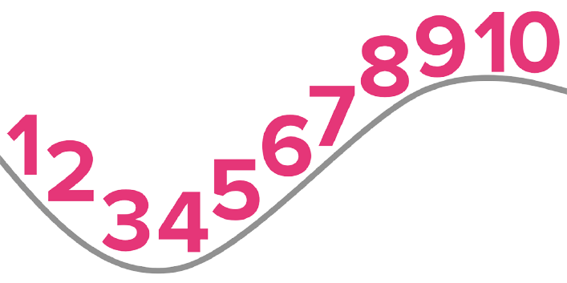

How can I Keep Healthy on Daily Basis
during the COVID-19 Pandemic

You can follow these 10 steps to Keep Healthy during the COVID-19 Pandemic
- Keep to your regular routines as much as possible and maintain a daily schedule for yourself including sleeping, meals and activities.
- Stay socially connected. Speak to loved ones and people you trust every day or as much as possible, using the telephone, video-calls or messaging, through writing letters, etc. Use this time to share your feelings and to do common hobbies together.
- Be physically active every day. Reduce long periods of sitting and set up a daily routine that includes at least 30 minutes of exercise. Make sure to do activities that are safe and appropriate for your level of physical fitness as indicated by your health-care worker. You can use household chores as a way to keep physically active, follow an on-line class (e.g. Tai Chi, yoga) or choose your favourite music and dance to that.
- Drink water and eat healthy and well-balanced meals. This will keep you hydrated, help strengthen your immune system and lower the risk of chronic illnesses and infectious diseases.
- Avoid smoking and drinking alcohol. Smokers are likely to be more vulnerable to COVID-19 because smoking can affect lung capacity and because the act of smoking increases the possibility of transmission of virus from hand to mouth. Drinking alcohol not only disturbs your sleep but may also increase your risk of falls, weaken your immune system, and interact with any prescription medicines that you are taking. Limit the amount of alcohol you drink or don’t drink alcohol at all.
- Take breaks from news coverage about COVID-19 as prolonged exposure can cause feelings of anxiety and despair. Seek updates at specific times of the day from a reliable source like the WHO or national or local channels in order to help you distinguish facts from rumours or scams.
- Engage in hobbies and activities that you enjoy or learn something new. Cognitive exercise such as reading a book or doing crosswords/Sudoku will keep your mind active and distract you from worrying. You can also use this time to keep a well-being diary
- If you have ongoing health conditions take your prescribed medicines and follow the advice of your health-care worker regarding any health visits or phone consultations.
- If you have an emergency medical condition that is not related to COVID-19 contact health emergencies immediately and ask what you should do next. Follow the instructions of the health-care worker.
- If stress, worry, fear or sadness get in the way of your daily activities for several days in a row, seek psychosocial support from available services in your community. If you are subject to abuse or violence from others, tell someone you trust and report this to the relevant authorities. You can also seek support from dedicated helplines that may be available in your country.
RELATED: Healthy Lifestyle Tips